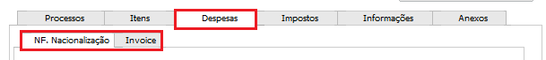
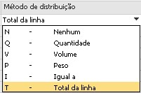
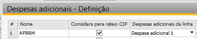
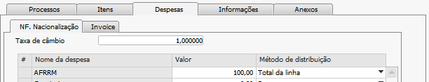
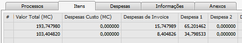

Processo de Rateios de Despesas para a Invoice e para Nacionalização
Antes de adicionar a Invoice e realizar a Nacionalização, o usuário poderá informar as despesas adicionais envolvidas no processo de importação na aba Despesas. Esses valores precisarão ser rateados para integrarem o valor do item ou dos custos adicionais e com impostos no momento de gerar a Invoice e a Nacionalização. O processo de rateio de despesa para Invoice deve ser feito antes de gerar a Invoice, e, portanto, antes do momento de nacionalização. No momento de inserir as despesas de nacionalização, deve ser feito antes de adicionar a Nota Fiscal.
Dentro da aba de Despesas existem duas divisões, respectivamente para os processos de Nacionalização ou de Invoice:
{kind=link}
O rateio de Invoice deve ser realizado antes do de NF Nacionalização, pois todas as despesas lançadas como Invoice serão inclusas no preço dos itens.
Deve-se observar que caso uma despesa configurada como Despesa I, II ou III no cadastro de despesas adicionais esteja também configurada como despesa de Invoice, essa não irá mais ter a característica de Despesa I, II ou III e terá seu valor incluso no preço do item.
Se o usuário realizar o rateio de Invoice e/ou rateio de Nacionalização e após isso alterar os valores das despesas de Invoice, esses rateios já feitos serão desconsiderados, pois os valores não estarão condizentes com o informado pelo usuário, e este deve obrigatoriamente realizá-los novamente.
A finalidade dos rateios é incluir o valor das despesas adicionais nos documentos de Invoice e NF Nacionalização, assim sendo, quando esses documentos já estiverem finalizados, não se poderá mais executar o processo de rateio.
Possíveis ocorrências durante o processo
Caso o usuário tente realizar o rateio de NF Nacionalização antes de realizar o rateio de Invoice e existam valores lançados nas despesas de Invoice*, será exibida a mensagem de erro:

BR One :: Realize o processo de **Rateio de Invoice* antes de realizar este processo.*
Se o documento de Invoice já estiver lançado e o usuário tentar executar o rateio, será exibida a mensagem de erro:
{kind=link}
BR One :: Existe um documento de Invoice gerado para este processo. Não é possível alterar os valores rateados.
Se o documento de N.F. Nacionalização já estiver finalizado e o usuário tente realizar o rateio de Nacionalização, será exibida a mensagem de erro:
{kind=link}
BR One :: O processo de **N.F. Nacionalização* já foi concluído. Não é possível alterar os valores rateados.*
Detalhes dos cálculos dos rateios
{kind=link}
Na aba de NF. Nacionalização dentro da aba Despesas deve ser informada a taxa de câmbio para a realização do rateio. Caso o usuário não informe a taxa e clique no botão Rateio, a seguinte mensagem será exibida:
{kind=link}
BR One :: Para realizar o rateio é necessário informar a taxa de conversão da moeda estrangeira.
Todas as despesas adicionais cadastradas, com o flag Despesas de Importação marcado, o Método de distribuição diferente de Nenhum e com o campo Etapa do processo igual a N.F. Nacionalização serão carregadas na coluna Nome da despesa. Na coluna Valor (MC), o usuário deverá inserir o valor das despesas. Essas despesas serão rateadas de acordo com o método de distribuição, gravadas na aba Itens nos seus devidos campos e inseridas no preço do item ou como despesas adicionais da linha 1,2 ou 3 do documento para a geração da NF posterior. As despesas só poderão ser lançadas em moeda corrente.
De acordo com as despesas adicionais cadastradas como Despesa adicional 1, Despesa adicional 2 e Despesa adicional 3, o Add-on saberá em quais linhas da NF de nacionalização a despesa será atribuída. Para essas despesas que tiverem a coluna Despesas adicionais da coluna preenchidas, o rateio será feito de acordo com o Método de distribuição selecionado para a despesa e informado o resultado nas colunas Despesa 1, Despesa 2 e Despesa 3 da aba Itens.
Para as despesas que não tenham valor na coluna Despesas adicionais da coluna, será feito o rateio de acordo com o Método de distribuição, acumulando o valor das despesas para cada item, e ao final, será possível visualizá-lo na coluna Despesas para custo do item (MC) na aba Itens.
Após informar o valor das despesas, basta fazer o rateio clicando no botão Rateio. Se não houver nenhum erro ao fazer o rateio, as seguintes mensagens serão exibidas:
{kind=link}
BR One :: Realizando o cálculo das despesas adicionais. Aguarde…
{kind=link}
BR One :: Rateio das despesas adicionais de N.F. Nacionalização realizado com sucesso.

Todas as despesas adicionais cadastradas, com o flag Despesas de Importação marcado, o Método de distribuição diferente de Nenhum e com o campo Etapa do processo igual a Invoice serão carregadas na coluna Nome da despesa da aba Invoice dentro da aba Despesa. O usuário deverá inserir o valor da despesa, que será computado em mesma moeda que o documento de importação, isto é, em moeda estrangeira. Estas despesas serão rateadas de acordo com seu método de distribuição e exibidas na aba Itens na coluna Despesas de Invoice.
Para conferir o rateio, vá até a aba Itens e os campos terão sido calculados.

Obs.: Caso sejam adicionadas novas despesas adicionais (Tanto de Invoice quanto de NF. Nacionalização) no cadastro de despesas adicionais, é possível atualizar as despesas de um processo de importação que ainda não tenha gerado NF Nacionalização. Para isso, é preciso clicar no botão Atualizar despesas* da aba Despesas. Isso fará com que as novas despesas sejam carregadas nas abas correspondentes de Nacionalização ou Invoice (dentro da aba Despesas), e caso alguma despesa que antes era Invoice passou a ser NF Nacionalização, essa será recarregada na aba correta.
Os métodos de distribuição existentes são os seguintes:
{kind=link}
Nenhum: O valor da despesa não é distribuído pelas linhas do documento.
Quantidade: Distribui o valor da despesa pelas linhas do documento, de modo proporcional à quantidade de cada linha.
Fórmula: (Quantidade Unitária * 100% / Soma (Quantidade Unitária)) * Despesa
Volume: Distribui o valor da despesa entre as linhas do documento, de modo proporcional ao volume dos itens em cada linha.
Fórmula: (Volume da linha *100% / Soma (Volume da linha)) * Despesa
Peso: Distribui o valor da despesa entre as linhas do documento, de modo proporcional ao peso dos itens em cada linha.
Fórmula: (Peso da Linha * 100% / Soma (Peso da linha)) * Despesa
Igual a: Distribui o valor da despesa igualmente entre as linhas do documento. Por exemplo, o valor da despesa é dividido pelo número de linhas e distribuído da forma correspondente, independentemente da quantidade e do total de cada linha.
Fórmula: Despesa / Total das linhas
Total da linha: Distribui o valor da despesa pelas linhas do documento, de modo proporcional ao valor total de cada linha. Por exemplo, existem três linhas com um valor total de R$ 500, R$ 300, e R$ 200, respectivamente, e o valor da despesa é R$ 100. O valor da despesa é distribuído da seguinte maneira: R$ 50 para a primeira linha, R$ 30 para a segunda e R$ 20 para a terceira.
Fórmula: (Valor Total da linha (MC) * 100% / Soma (Valor Total das linhas (MC))) * Despesa
Para os tipos de rateio Volume e Peso, é necessário que a coluna respectiva esteja preenchida na aba Itens. Caso não esteja, ao tentar fazer o rateio, as seguintes mensagens serão exibidas (cada uma para um tipo):
{kind=link}
BR One :: Na aba de itens para todas as linhas deve ser informado valor maior que zero para o campo Volume.
{kind=link}
BR One :: Na aba de itens para todas as linhas deve ser informado valor maior que zero para o campo Peso.
O primeiro cálculo realizado é das Despesa Excluídas da Base Rateio, pois não são realizadas por nível, ou seja, a base sempre será o selecionado na linha sem níveis anteriores.
Despesas excluídas são:

Itens importados:

Rateio das despesas excluídas 01 e 02

Na coluna será exibida a soma dessas despesas por linha:

As colunas Rateio Nível 1 até o Nível 5 serão calculados da seguinte forma:
Despesas de Nacionalização

Ao selecionar a opção de RATEIO na aba Despesas -> NF Nacionalização, os valores do rateio serão exibidos na aba Itens nas colunas de cada Nível.
O cálculo do rateio se baseia em um valor no qual foi configurado no método de distribuição, fazendo o cálculo com regra de 3. Quando é utilizado o método por TOTAL DA LINHA tem uma nova opção para ser utilizado sem algumas despesas no valor para rateio, e sempre será agregado o valor do nível anterior para esse rateio.
Abaixo os cálculos realizados de acordo com a lista de despesas anterior.
O cálculo do Nível 1 será:
D001 – Rateio por peso não é afetado.
D002 – Rateio por Total linha, valida se pega com o sem as despesas excluídas, nesse caso não está marcado o parâmetro, recupera a coluna de Total MC + Níveis anteriores.

O cálculo do Nível 2 será:
D003 – Rateio por Total linha, valida se pega com o sem as despesas excluídas, nesse caso está marcado o parâmetro, recupera a coluna de Total MC – Despesas Excluídas + Níveis anteriores.
D004 – Rateio por Total linha, valida se pega com o sem as despesas excluídas, nesse caso está marcado o parâmetro, recupera a coluna de Total MC – Despesas Excluídas + Níveis anteriores.

O cálculo do Nível 3 será:
Não tem nenhuma despesa configurada para esse nível então a coluna será preenchida com o valor 0.
O cálculo do Nível 4 será:
D005 – Rateio por peso não é afetado.

O cálculo do Nível 5 será:
D006 – Rateio por Total linha, valida se pega com o sem as despesas excluídas, nesse caso não está marcado o parâmetro, recupera a coluna de Total MC + Níveis anteriores.

Aba Despesas:

Aba Itens:
{kind=link}
Os cálculos para geração da Nacionalização continuam o mesmo:
Preço Unitário: (Despesas de custos / Qtde) + Preço Unitário MC (aba Itens)
Preço Unitário: (90 / 6) + 50 = 65,00

Despesa Custo (MC)=
Nível 1 + Nível 2 + Nível 3 + Nível 4 + Nível 5 – Desp. Ad1 – Desp. Ad.2 – Desp. Ad. 3
35 + 50 + 5 +10 – 10 – 0 - 0 = 90
Valor total Final (MC)=
(Preço Unit. (MC) * Quantidade) + (Despesa Custo (MC) + Despesa 1 + Despesa 2 + Despesa 3)
(50,00 * 6) + (90,00 + 10,00 + 0 + 0) = 400,00
Valor Unit Final (MC)=
Valor total Final (MC) / Quantidade
400 / 6 = 66,66
Fator custo=
Valor total Final (MC) / Valor total (MC)
400 / 300 = 1,33

As abas de Invoice e NF Nacionalização da aba de Despesas serão bloqueadas para edição conforme as etapas de Invoice e NF Nacionalização forem finalizadas. Caso o usuário tenha inserido uma Invoice com sucesso, a aba Invoice de Despesas será exibida da seguinte forma:

E caso a NF Nacionalização esteja completa, a aba NF Nacionalização também será exibida bloqueada conforme a imagem:

Estes bloqueios são feitos para garantir a consistência das informações que estão apresentadas nestas telas com as utilizadas no momento de adição dos documentos de Invoice e/ou NF Nacionalização. Caso o método de distribuição de uma despesa que tenha o flag Considera para rateio CIF marcado (em Despesas adicionais) seja alterado, a seguinte mensagem será exibida:
{kind=link}
BR One :: Não é possível modificar o ‘Método de distribuição’ de uma despesa configurada como CIF.
Ao pressionar o botão Rateio (aba NF. Nacionalização*), será realizado o processo normal para as despesas que não possuem o flag **Considera para rateio CIF, e após a identificação dos valores, será realizado o rateio e a soma nos valores já identificados, com os valores das despesas que possuem o flag Considera para rateio CIF.
O cálculo a ser feito quando o flag Considera para rateio CIF estiver marcado é o seguinte:
((Valor Total (MC) linha + Despesas Custo (MC)) * 100% / (Soma da coluna Valor Total (MC) + Soma da coluna Despesas Custo (MC))) * Valor da despesa que tem o flag marcado
  {kind=link}
{kind=link}
{kind=link}
((193,747980 +0) * 100% / (297,152800 + 0)) * 100
65,20
((103,404820 +0) * 100% / (297,152800 + 0)) * 100
34,79